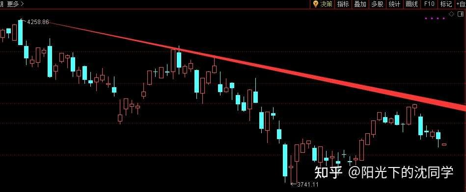
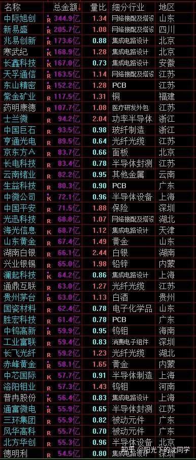
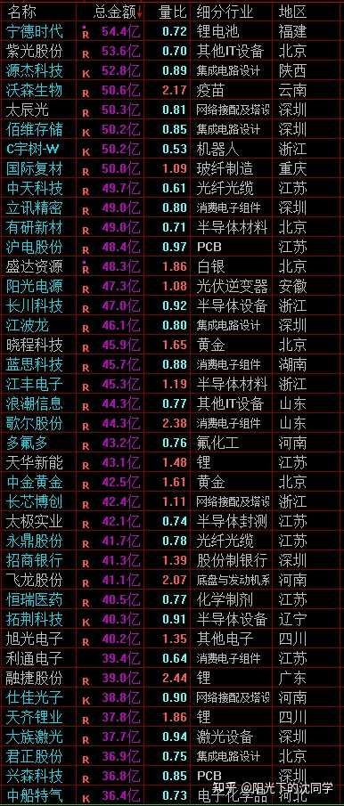
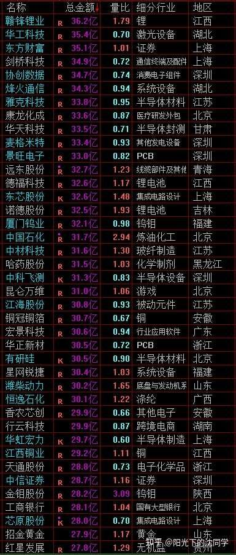

本文核心逻辑在于‘趋势确认与防御性配置’。作者认为当前市场处于明显的下跌趋势中，成交量萎缩意味着市场缺乏增量资金推动，反弹高度将逐级递减。其内在因果链为：成交量低迷->市场缺乏承接力->反弹无法突破前高->高点不断下移->下跌趋势延续。因此，作者主张通过‘控制仓位+预留现金’来应对不确定性，利用下跌节奏分批布局低位优质资产，而非盲目抄底。
行情不太好做，成交量也比较低迷，多留现金依旧是目前最重要的核心策略
在这个基础上慢慢加仓，没有问题，我自己也在加
下跌会有不少买点出现，但买入节奏不能太快，暂时没有重仓机会
现在行情下跌趋势是非常明显的
成交量在进攻的时候也不足2.5万亿
整体赚钱效应很差，除了极少数细分领域机会活跃，大部分股票都走势不太好
这种就是很难做的行情，总仓位必须控制好
3950-3650区间目前来看不会那么容易直接跌破，因为这个区间筹码成本注【本质逻辑】筹码成本扎实意味着该区间有大量资金持仓，跌破该位置会引发持仓者的恐慌性抛售，导致趋势加速下行。【新手提示】关注关键支撑位，若支撑位被放量跌破，说明多头防线崩溃，应果断减仓。还算比较扎实，且是牛熊分水岭
如果非常快的跌破3950-3650区间，并且长期运行在3650以下，那大部分股票的走势会非常差，持仓体验会非常差，尤其是很多融资盘注【本质逻辑】融资盘是带杠杆的资金，当指数下跌触及平仓线时，融资盘会被动强制卖出，形成‘卖出-下跌-再卖出’的负反馈循环。【新手提示】避开融资余额过高的个股，在弱势行情中，这类股票往往是杀跌的重灾区。大的方向，包括一些可能估值并不高的企业也可能因为指数太弱而持续错杀
市场一般来说都是运行在一个合理估值，这也是投资不容易赚钱的地方
大部分时间就是没有机会的，不是你努力就可以创造机会，就可以提升胜率
就比如说在3-5年的行情周期里面，1年是行情非常低迷的，1年时间行情泡沫大，其他时间就是市场开价中规中矩，不是很便宜，也不是非常贵
大部分投资者如果没有长期积累实战经验，对行情周期理解不够，亦或者说耐心不够，一定会平时就基本上满仓，不容易等到非常低迷的机会再加仓，拿不住钱
尤其是喜欢追高，喜欢行情泡沫大的时候，市场舆论好的时候去加仓
这样就导致了手里的筹码只有极少数人是很便宜的，大部分人手里的筹码要不就是正常估值，要不就是很贵的估值
最终就是大部分人要不亏钱，要不只能赚一点点，而且这要行情非常好的时候，一旦行情差了，因为筹码成本的问题大部分人赚不到钱
所以控制仓位，拿得住钱，珍惜现金，控制成本是最最重要的事情
大家先把这个最重要的投资核心记住，再去考虑什么ETF好，什么企业好
只要买贵了，实际上什么都不好，买的便宜，熊市的很多莫名其妙垃圾股也因为足够便宜导致一时半会不容易亏钱
目前的行情就是不能满仓的行情，就是整体来说估值偏高的行情

• 红色趋势线清晰展示了高点不断下移的下跌通道，反映了市场多头力量的持续衰竭。 • 底部支撑位反复测试，显示多空双方在此处存在激烈博弈，但反弹力度明显不足，心理层面已转为‘逢高减仓’。
每天原创不易，读者朋友千万不要忘记点赞支持一下
正所谓先赞后看，腰缠万贯
大家可以先点一波赞，我们再继续慢慢聊
祝点赞的朋友福寿无量，天天开心
我们再深度的聊聊行情走势，这个是很多朋友关心的问题
3950-3650区间运行目前会继续挺长一段时间，之前跌到3750附近，有大资金护盘一波，而且科技股很多快速错杀，要自救一波，反弹也比较快，差不多也到了4000点附近
现在继续开始下跌，下跌趋势依旧
那么后面肯定还有反弹，我们先看反弹的点从什么地方开始，然后看高点
如果下一次依旧可以在3750附近反弹，而且高点还可以突破4000点，那么市场筹码肯定有比较大的变化，市场下跌趋势的重心改变，后面才有可能从下跌趋势转变到震荡趋势
这个都是需要继续观察的
目前走势就是下跌趋势，需要非常谨慎，在没有走出来新的趋势之前
行情就是在跌完这一轮以后，再反弹应该是很难到4000点的，高点会不断下降的
比如说之前高点是4000点附近，是突破了3950-3650区间的，下一次反弹可能就只能到3950附近，这种是比较大概率的
不可能不反弹，因为市场没有完全绝望和崩盘，反弹一定有，就是高点会越来越低，且低点暂时还看不见具体是多少
之前是3750附近，后面还需要看见很多个低点，才能确定，最终调整低点的位置
这个是很复杂的一个观察过程，不是说反弹的时候看着还不错，就马上觉得牛市来了
行情的推动，需要资金面，市场赚钱效应，走势多重共振，才能走出来的
实战方面也可以做的非常细腻
我自己是会把握下跌机会去加仓的，最近也在买一些低位科技，低位新兴行业，有开几个新仓，挖掘一些比较好的低位好公司，短线账户在持续加仓中
因为成交量越来越低，而且我认为高点会一波低于一波，所以加仓节奏会比之前慢，之前是第一波杀跌，主力自救注【本质逻辑】主力被套后，利用反弹机会拉升股价以减少亏损或吸引散户接盘。这种反弹通常缺乏基本面支撑，持续性差。【新手提示】看到急涨不要急于追入，判断是否为‘自救’反弹，关键看是否有成交量配合及板块效应。预期是最高的，也是最好做的超跌反弹行情，后面当然也会有反弹，但肯定难度会提升
所以这一次买肯定要买，也认为会反弹，但节奏会慢一点，给的机会不多的话，不会那么快加仓起来
不认为行情会走单边下跌行情，尤其是在3950-3650区间里面，走不了单边，没有那么绝望，每次跌下来还会反弹
只要抓住下跌机会去慢慢加仓，不要买乱七八糟的股票，远离高位，高估值风险
多看看低位优质企业，不管是新兴行业，还是出海龙头，高端制造，白马蓝筹，红利，都可以，低位的多看看，到时候反弹时候或多或少都有收益，这种波动是可以做的
后面如果核心抱团科技，那些业绩超预期的细分方向，这些每周我也聊过很多，大家可以去复习一下，这些方向如果错杀比较多，也可以博弈一下
现在的加仓机会差不多就是这样，需要先预留一大笔现金，需要总仓位低一点，拿着钱跟着下跌节奏去慢慢收集廉价筹码
等下一次反弹起来再获利了结，是这样的一个节奏
千万不能直接满仓，乱买，那你先套一波，后面反弹起来都不一定解套，还怎么赚钱
把市场这个节奏搞清楚，就比较好做现在的一个波段行情
每天反弹起来要做好获利了结是因为最终如果没办法扭转下跌趋势，3950-3650区间必然是守不住的，低点也会刷新，所以你下跌买了，反弹不走，后面会比较麻烦，反弹起来是要放掉仓位的，这个也是重要的交易细节
最适合新手投资者，上班族，股龄10年内投资者的投资策略分享
美股依旧在高位，没有买入机会，拿住底仓即可，美股筹码的长期持仓体验和复利都是非常好的，拿住很重要
黄金短期表现非常好，不宜定投，等后面跌下来再定投，合适的仓位可以拿住抗通胀，黄金长期持仓体验不如美股，但未来持仓体验可能比之前十几年好，因为现在全球债务压力很大，黄金在这样的大环境下是优质资产，可以不做波段，底仓拿住，但持仓比例不应该高于美股，加仓过大的投资者也要控制好持仓，预留以后跌下来的加仓空间
债券继续看好，现在这种股市难做的时候，债券是很好的持仓选择
红利整体估值很低，值得长期关注，核心央企更加稳健
如果未来成交量越来越少，那么可以支持股价的核心就是企业本身了
企业的回购，业绩，现金流，股息，估值，这些会非常重要
在行情好的时候，成交量大，很多股票的股价是靠这种热点带动的上涨，成交量退潮以后，还能继续留下来，稳住股价的资金都是长期资金，他们看重的是企业本身的长期价值
所以如果未来有大熊市，你的持仓能不能熬的过去，大家一定要考虑以上这些因素
估值低的好公司，还分红稳健，现金流不错，回购和业绩跟得上，这种问题不大，下跌也是买入机会，长期可以稳定复利
其他高位的，没有这些优势的股票，熊市都会跌的非常惨，要经历过熊市洗礼以后，下一轮牛市才会有机会
其实就是潮涨潮落，有些股票就是很看成交量，很看行情来推动股价的，有些股票就是长期即使没有什么利好，他经营稳健，现金流稳健，分红可以稳得住，自然长期穿越牛市，值得每年股息复投，值得长期坚守
我们在构建底仓的时候，做长线投资的时候，就应该多关注长期比较稳健的这种白马蓝筹股，红利股
尤其是熊市，他们更抗跌，而且他们最近几年还股价比较低迷，后面有杀跌更加有配置机会，也值得拿住
不需要害怕熊市，资产配置好，总仓位控制在60%以内就好，随着下跌慢慢基础低位优质资产
远离泡沫大的品种，他们才是熊市主要杀跌的对象，很多高位科技最终股价可能70%-90%都会跌到，因为全球股市每次熊市都一样，核心热门股，高估的都要跌这么多
包括之前21年白马蓝筹股的大牛市，回过头来看，很多顶级企业一样跌了这么多
远离这些高位品种，就算上证指数跌破3600点，也不会那么麻烦，控制好仓位，优化好自己目前的持仓即可

• 该表通过量化估值水位，为投资者提供了‘安全边际’参考。 • 新手应重点关注‘低估’区间，在市场恐慌时，这些位置是长期资金配置的心理防线，而非盲目博弈泡沫。
大家有任何投资疑问，有什么想交流的都可以付费咨询，想单纯支持一下也可以
【在知乎上我的主页咨询即可，没有任何群，不搞私下小圈子】
家庭资产长期稳健配置方案分享，仓位优化，估值分析，行业分析，心态调整，各种投资学习技巧都可以咨询
大家的支持和尊重是我创作的最大动力
感恩大家每天的付费咨询和打赏，感谢大家对知识的尊重，感谢大家对我的支持
欢迎提问
---
适合职业投资者，10年以上经验老股民，基本功极其扎实投资者的实战分享
继续聊实战
短线账户会随着下跌继续加仓的，这个策略不变，未来行情肯定会反弹，虽然高度不认为可以到4000点以上，也不认为可以突破之前高点，但反弹肯定有的，所以下跌短线账户会参与，加仓会慢一点
博弈几个可能纳入恒生科技的港股，做做波段
只要是低位优质的方向给到杀跌机会都会加
长线账户红利最近没有加仓，因为没有怎么跌，红利在行情不太好的时候护盘比较强
白马蓝筹方面有跌的比较多的加了一点，港股方面最近下跌比较快，这方面加的比A股多，核心港股主要做长线配置，如果在12月恒生科技大幅调整成分股之前还有大跌，我会继续加仓，作为长期去配置
因为最近在整理自选股，港股刚刚整理完，A股还在整理，一些发现的不错的企业，最近也会开新仓试一试，先感受感受股性，后面继续跟踪调研，继续多交易感受，如果觉得不错的，就留下来做长期自选股长期做
每年都会有自选股的换动，因为随着实战经验的丰富，新的调研内容，对投资的理解提升，包括各种踩雷后面的思考
一些过去感觉可以做的后面就不想做了
这方面也可以最后分享一些自选股的心得
在过去我的自选股非常非常多，因为感觉什么都想要，生怕错过赚钱机会
然后就发现自己根本看不过来，也做不过来，并且很多企业我可能理解不够深，冒然去做，最终止损再快也要亏一笔，没必要搞那么多自选股
而且很多自己看好的股票后面因为表现不尽人意，很多股票只能做短线，时间一旦到5年以上容易暴雷
在上涨趋势，在顺周期很强的企业，最终因为经营问题，企业整体竞争力问题导致跟不上，后面就越来越差
就是有了各种经验，经历过很多行业的周期以后，也就发现了很多股票没必要关注，胜率没有那么高
尤其是现在AI时代，量化时代，ETF越来越丰富，这个是之前没有的情况，说实话ETF跑赢最少80%以上的股票，这个不夸张
如果你ETF选的好，跑赢90%以上的股票也是正常的
所以我反而最近ETF筛选越来越多，以前我很少那么认真的去筛选ETF，都是以配置个股为主
现在我认为ETF重要性越来越高了，个股很多确实可以不关注了
这样也导致我自选股大幅缩减，很多股票确实不需要去交易，浪费时间，胜率不够高
我现在会考虑这个股票和类似的ETF比，最终那个胜率高，如果我觉得跑不赢ETF，就算他是有点亮点，我也不会做
那么能跑赢ETF的股票并不多，所以大部分股票都可以剔除自选股
自选股越来越筛选严格，越来越少是未来的大势所趋，确实已经不需要关注那么多股票了
而且越是中小盘股，越长期不行，大家也知道，股价短期看博弈，看资金面，长期就是看基本面
现在是充分竞争的年代，确实就是巨头不断吃掉市场的时候，中小企业你现在看是小而美，过几年就完蛋了
所以不管你看好什么方向，实际上现在可能百花齐放，后面就是那么2-5家企业活下来，长期投资没有那么多选择
那么这2-5家可以活下来的企业里面，很可能就1-2家跑赢ETF，剩下的也就是活下来而已，也没必要去投资
自选股的筛选思路越来越清晰，就是每个细分领域留几个龙头长期关注，其他都可以不要，然后把核心的ETF筛选出来备用
看好什么方向就配置1-2个这个方向的龙头股+ETF，这样足够了，不需要买乱七八糟的股票，拉长时间都不如ETF有人不如核心龙头
在经历了各种踩雷和失败的经验以后，我现在是不喜欢做太小众，或者中小盘股的
我短线博弈仓位都是做低位的好公司，便宜，优质为主，不是去抓犄角旮旯的中小盘股，做一些莫名其妙的企业
这样的投资我现在是不会做了，现在也没有多少这种机会，都胜率太低，都是游资在里面玩，不是很有意思
大家如果想组建自己的自选股，也可以按照这样思路来
把各种细分领域龙头找出来，再把美股，黄金，债券，红利，各行各业成分股好的ETF，优质宽基ETF这些找出来
有一个这样的自选股池子，平时多看着，足够了，每年又新的好公司，加入几个，基本上也不需要大动
就像美股市场一样，实际上美股90%的股票是死气沉沉的，只不过大部分人不玩美股，不知道罢了
美股就是做核心的一批龙头股，其他不要说跑赢指数，其他的交易都很少
这个是全球股市的大趋势，你做投资，先把ETF筛选好，大部分资金也会都会做ETF，然后盯着实际上最核心的一批行业龙头，也就是他们可以动的了，有交易，其他都不如指数基金，都没有什么交易
市场上的钱都被龙头股和ETF吸走了，资金面来看，就是这些有交易的，有关注度的才有机会
把这些思路整理清楚，我相信对大家帮助极大
职业投资者都搞不定的大部分奇奇怪怪的股票，普通投资者如果去博弈，其实纯粹就是拼运气罢了，真的没必要，还不如长期搞点红利，搞个指数基金实在
我们要的是长期稳健，是长期复利，短期波动谁都猜不到，也没必要纠结
先把自选股筛选好，以后就在自己熟悉的能力圈，自选股里面玩，你会越来越熟悉，胜率越来越高
股性熟悉了，走势节奏熟悉了以后，波段也做的更好，做自己熟悉的股票，熟悉的ETF，胜率就是会一直提升的
这也是非常非常重要的经验，不要总是换不一样的东西做，一开始做起来都可能因为不熟悉走势，股性导致很难赚钱的
有一批自己越来越熟悉的ETF和股票，其实就是你的财富，你以后靠他们是容易赚钱的
希望大家可以深刻理解这句话，因为我认为是我自己这些年实战中，非常重要的一个经验总结
这个点以后我还会展开细腻的聊

• 列表中的‘量比’指标是关键，量比大于1说明当前成交活跃，小于1则说明交投冷清。 • 结合总金额观察，资金目前高度集中在科技与资源类板块，显示市场博弈呈现‘结构性行情’，而非普涨。


风险提示：股市有风险，入市须谨慎
今天是坚持写复盘笔记的第1507天【每日打卡】
下面是我自己多年来的一些重要的心得感悟，分享给大家，会不定期增加内容
1，
长期投资成功的关键是稳定的情绪和沉稳的性格，这些比过人的天赋更重要
2，
最终我们穷其一生获得的一切经验、知识和所有财富都需要转化为自身的品德修养，不然获得越多失去越多
自身的修养是留住各种财富最好的容器，富裕一时不难，富裕一生不易
珍惜获得的一切，保持初心、慈善、知足，让自己的德行和财富共同成长，才能方得始终
3，
古之成大事者，不惟有超世之才，亦必有坚忍不拔之志
想成为优秀的投资者一定要持之以恒，不断学习，反思，总结，在投资中获得的各种经验最终都会成为你财务自由的砖瓦
4，
再高的智商也一样会被情绪一瞬间冲垮
大部分的亏损都来源于投资者的冲动和情绪化交易，学会控制自己的情绪和心态才能长期稳定的复利
5，
富在术数，不在劳身
一定要多思考，任何时候想清楚了再交易，漫无目的的交易，只会多做多错
6，
利在势居，不在力耕
投资赚钱主要靠把握时机，没有机会就休息，多留现金
做可以让自己心安的投资，便是对于你来说最好的盈利模式
7，
谨记：贪念起，万念俱灰！
控制住了风险，利润会随之而来
富贵险中求，也在险中丢
求时十之一，丢时十之九
仓位情况【不推荐模仿】
短线博弈仓位：10%
长线+短线总仓位尽可能低于60%，这样更符合当前行情的风险程度
长线资产配置目前个人分散持有：各种债券ETF+各种核心红利ETF+美股ETF+黄金+优质REITS+长期看好的优质企业+核心ETF
美，港，A股长线+短线所有股票持仓投资方向配置比例参考：
金融：【保险，银行，券商】15%
消费：【新消费+龙头品牌消费+游戏】：28%
生物医药：12%
AI产业链：10%
能源，动力【储能，电力设备，电力方向】：6%
高端制造【半导体，机器人，航天航空，军工，出海龙头】：25%
周期【化工化纤，新材料，核心矿产】：4%：
【每3-6个月更新一次】
最新更新时间2026年6月
全文逻辑总结：当前A股处于‘存量博弈下的下跌趋势’，核心策略是‘防御优先’。新手避坑法则：1. 严控总仓位（建议60%以下），现金是应对熊市最好的武器；2. 拒绝追高，远离高估值泡沫股，转而关注低位优质龙头与ETF；3. 建立自己的核心自选股池，不要被市场热点牵着鼻子走；4. 认清‘反弹不等于反转’，在下跌趋势中，反弹是获利了结的机会而非满仓加码的信号。


{kind=link}
今天分享内容非常丰富，先收藏起来慢慢看，早上心浮气躁，不适合学习，总是看不进去
港股我昨天都卖了，挨打了，有点顶不住，还是不太能玩的明白港股
现在85%持仓，留点钱后面跌了再看买什么，不敢满仓了
庆幸的是手里的红利大家伙这几天是赚钱的，还不错，我暂时不打算卖出这些底仓，还是想熬过熊市，等以后老沈开始卖出这些再卖
最近几天办公室哀嚎一片，隔壁同事脸都绿了，他们主要就是满仓追涨杀跌，在这种行情里面确实不太好做
我发现手里有点钱了手是真痒，好几次想点开软件抄底，只要不满仓，就总是想买点什么
我要努力忍住，这次慢一点再满仓，先找找看有没有低位的好东西，多看几天再说
沈老师一直在说的债券具体是什么呀，想配置点
直接咨询老沈就好，他喜欢投资债券，也算是支持一下老沈
目前计划最大仓位:黄金ETF10%，标普500ETF10%，纳指ETF10%，港股ETF6%，A股ETF8%，港股个股24%，A股个股32%，债券太慢我个人不太喜欢，没配置。从实际账户表现来看，标普500ETF和纳指ETF是红的，黄金ETF快红了。A股和港股ETF半红半绿。A股个股只有30%是红的，港股个股只有20%是红的。红的里面红利比例高，绿的里面红利也大多数微绿。所以老沈天天苦口婆心劝大家多把资金放美股、红利、黄金、债券做长线配置是很有道理的。即使玩具体行业也是ETF比大多数个股好。我这个账户也保持差不多四个月没有更换过标的了，中间也有低位补过仓，算不上长线，但是也有一定参考价值了。已经实践过了，还是个股比例比ETF高，只能说是为了那个该死的翻倍的梦想了。ETF翻倍太难太慢了，个股机会大点，但是也要为此支付长期挨打的代价。
A股某些方面正在往美股靠拢，就是资金会大部分集中在龙头股和ETF上面，慢慢成为半有效市场。各种利好利空都会快速反应到龙头股的股价身上，那种捡烟蒂的策略不太可行了。龙头股股价反应太快，没有太多预期差和错误定价，世人皆醉我独醒基本不太可能。非龙头股和非题材股更难玩，我有试过持有低估的二三线企业，根本没有资金来临幸。所以在a股和美股主要还是寻找相对低估的龙头股，绝对低估的二三线股票没人玩，除非题材刚好赶上了。港股倒是还有烟蒂可以捡，受限流动性，一大批龙头股还很低估，但是流动性没来，估值再低质量再好也只能趴在地板上。长期挨打，等待一波爆发。有时候拿着港股会让你觉得前世造了什么孽，今生要受这种惩罚。
完全正确
我的港股也是，没有最低只有更低，而且好多莫名其妙大跌又大跌，我也是最好，幸好都是分散配置的，目前还套了十几个点
自选股思路很赞[赞同]
自选股我认为围绕自己能力圈很重要，就像我长期做医药股从来没有亏过
每日笔记
1、 行情不太好做，成交量也比较低迷，多留现金依旧是目前最重要的核心策略。
2、 美股依旧在高位，没有买入机会，拿住底仓即可；
3、 黄金短期表现非常好，不宜定投，底仓拿住，但持仓比例不应该太高；
4、 债券继续看好，现在这种股市难做的时候，债券是很好的持仓选择
5、 红利整体估值很低，值得长期关注，核心央企更加稳健。
最近行情宜苟。
如果再跌一点就入一些创业板ETF做短线。
也关注了一个央企红利ETF，杀跌就加仓。
8/25 老沈复盘概括（复盘 8/24 周一）
市场判断： 行情不好做，成交量低迷，下跌趋势非常明显；进攻时成交量不足 2.5 万亿，赚钱效应差，只有极少数细分领域活跃。但3950-3650 区间筹码成本扎实、是牛熊分水岭，不会轻易直接跌破。反弹还会有，但高点会一波低于一波（上次高点 4000 点附近，下一次可能只能到 3950 附近），最终低点暂时看不见。
核心观点： 多留现金仍是核心策略，控制仓位、拿住钱、珍惜现金、控制成本是最重要的事—— 买贵了什么都不好。大部分时间是没机会的，现在就是估值偏高的行情，不能满仓。远离高位高估值，多看低位优质企业（新兴行业、出海龙头、高端制造、白马蓝筹、红利）；量化 / AI 时代ETF 重要性越来越高，跑赢至少 80% 的股票—— 每个细分领域留几个龙头 + 核心 ETF 即可，自选股越来越精简是趋势。
今日操作（方向延续）： 短线仓位 8%→10%（+2%）。短线账户持续加仓中，开了几个新仓，买低位科技、低位新兴行业好公司；但加仓节奏比之前慢（成交量越低、高点一波低于一波，机会不多就不快加）。长线账户：红利没怎么跌没加；白马蓝筹跌多的加了一点；港股下跌快，加的比 A 股多，若 12 月恒生科技成分调整前还有大跌会继续加仓做长期配置。
其他资产： 美股高位无买入机会，底仓拿住（长期持仓体验和复利好）；黄金短期表现好、不宜定投，等跌下来再定投，底仓拿住，持仓比例不应高于美股；债券继续看好，股市难做时债券是好选择；红利整体估值低，核心央企更稳健。
一句话： 现在最重要是控制仓位、多留现金 —— 跟着下跌节奏慢慢收集廉价筹码，反弹起来获利了结，等真正的低位大机会再重仓。
10
老沈开始加仓了
我的话再等等，感觉下跌趋势还挺大。
看好什么方向就配置1-2个这个方向的龙头股+ETF，这样足够了，不需要买乱七八糟的股票，拉长时间都不如ETF不如核心龙头，有一批自己越来越熟悉的ETF和股票，其实就是你的财富，你以后靠他们是容易赚钱的[赞][赞][赞]这股票池和自选股确实很重要，尤其是现在这个时代做股票，就是不容易建立[捂脸]，踏实跟着沈同学多学习
我仓位85%